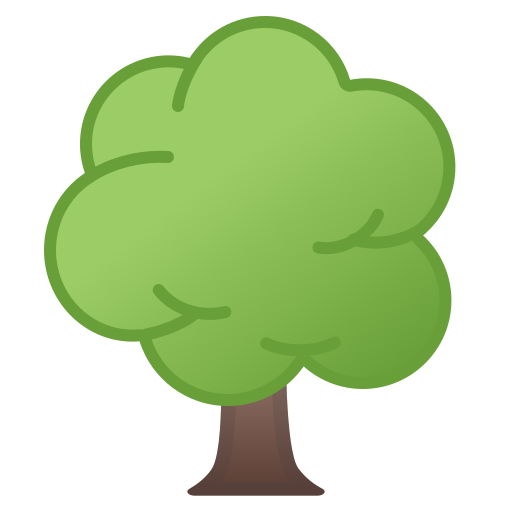

Explorando la Riqueza Natural de Honduras
Honduras cuenta con un impresionante sistema de áreas protegidas que resguardan ecosistemas únicos en el mundo. Desde las densas selvas de la Biosfera del Río Plátano hasta los bosques nublados en las cumbres de Celaque, este proyecto presenta una recopilación de los santuarios biológicos más importantes del país.
El objetivo de este portal es difundir la importancia de la conservación de nuestra flora y fauna, destacando las características principales, ubicación y especies clave que habitan en cada una de estas zonas protegidas.
Guía de Exploración
Selección: Utilice el menú superior para navegar entre las diferentes reservas.
Contenido: Cada sección incluye datos técnicos, descripciones y fotografías representativas.
Propósito: Educación ambiental y conocimiento de nuestro patrimonio natural.
